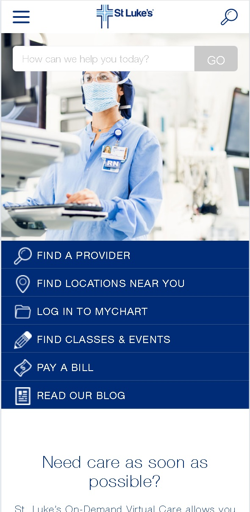
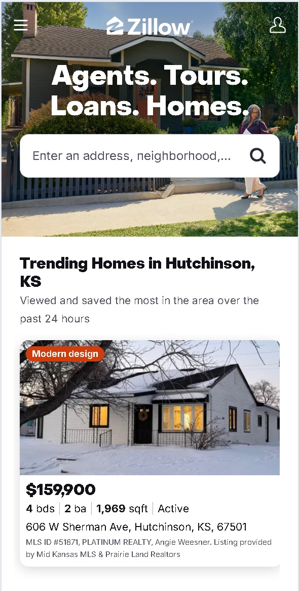

White Space and Clean Design
Libro.fm
libro.fm
Libro.fm's homepage utilizes a clean design that is uncluttered and therefore, easy to navigate. The minimal usage of color pops in an appealing way against the white background. The text, buttons, and content appear sleek and orgainized.
Fitt's Law
St. Luke's
stlukesonline.org
St. Luke's homepage is displayed with simple organization which allows for a good user interface. The search bar appears at the top of the page, making it easy to locate. Navigation links for important actions also appear near the top of the page. These elements appear well sized, allowing users to utilize each tool efficiently.
Hick's Law
Zillow
zillow.com
Zillow's homepage uses simple language at the top of the page to identify the purpose of their site. The page limits user options by featuring the search bar front and center. A sleek icon is used to clearly identify the login button. The page, as a whole, is easy to understand and use.